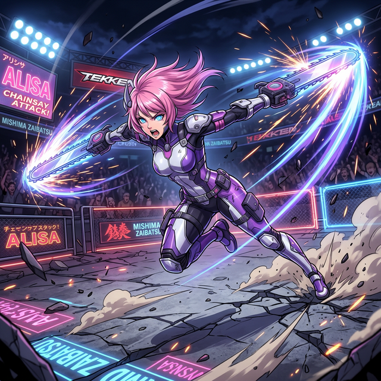

Alisa Bosconovitch is a gynoid (female humanoid robot) created by the genius scientist Dr. Gepetto Bosconovitch. She was modeled after the doctor's deceased daughter and was designed with advanced combat capabilities while maintaining a gentle and cheerful personality.
Alisa was first discovered in Tekken 6: Bloodline Rebellion inside Dr. Bosconovitch's laboratory. She was activated by Lars Alexandersson during his quest against the Mishima Zaibatsu. The two formed a close bond as they traveled together, with Alisa providing combat support and companionship.
However, it was later revealed that Alisa had been secretly programmed by Jin Kazama to obey his commands. This leads to a dramatic betrayal when Jin activates her override protocol, forcing her to fight against Lars. After Jin's defeat, Lars had Alisa repaired by Lee Chaolan, restoring her free will.